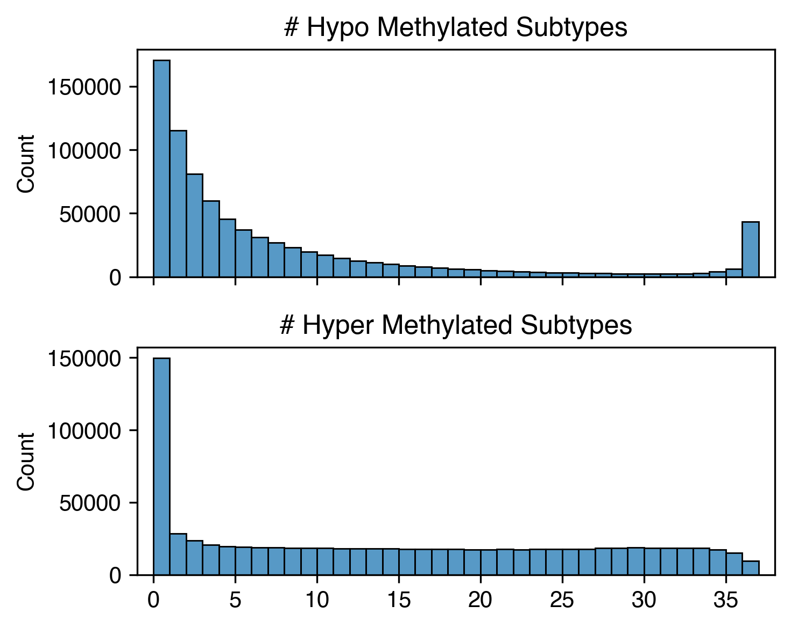
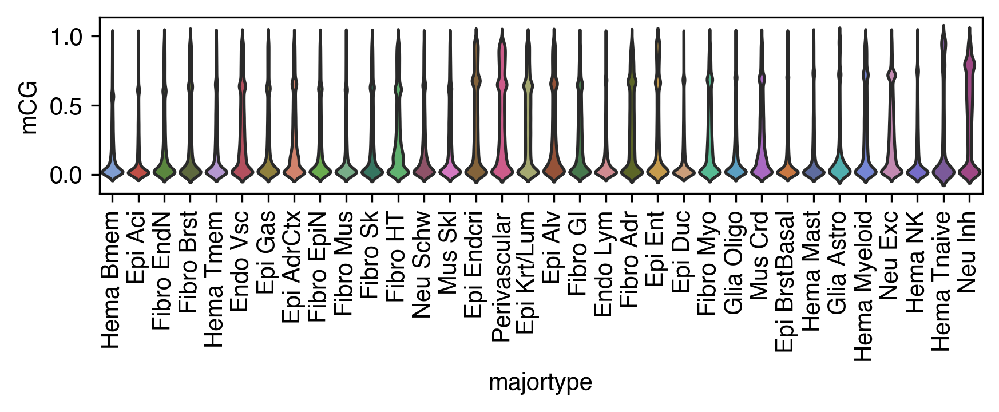
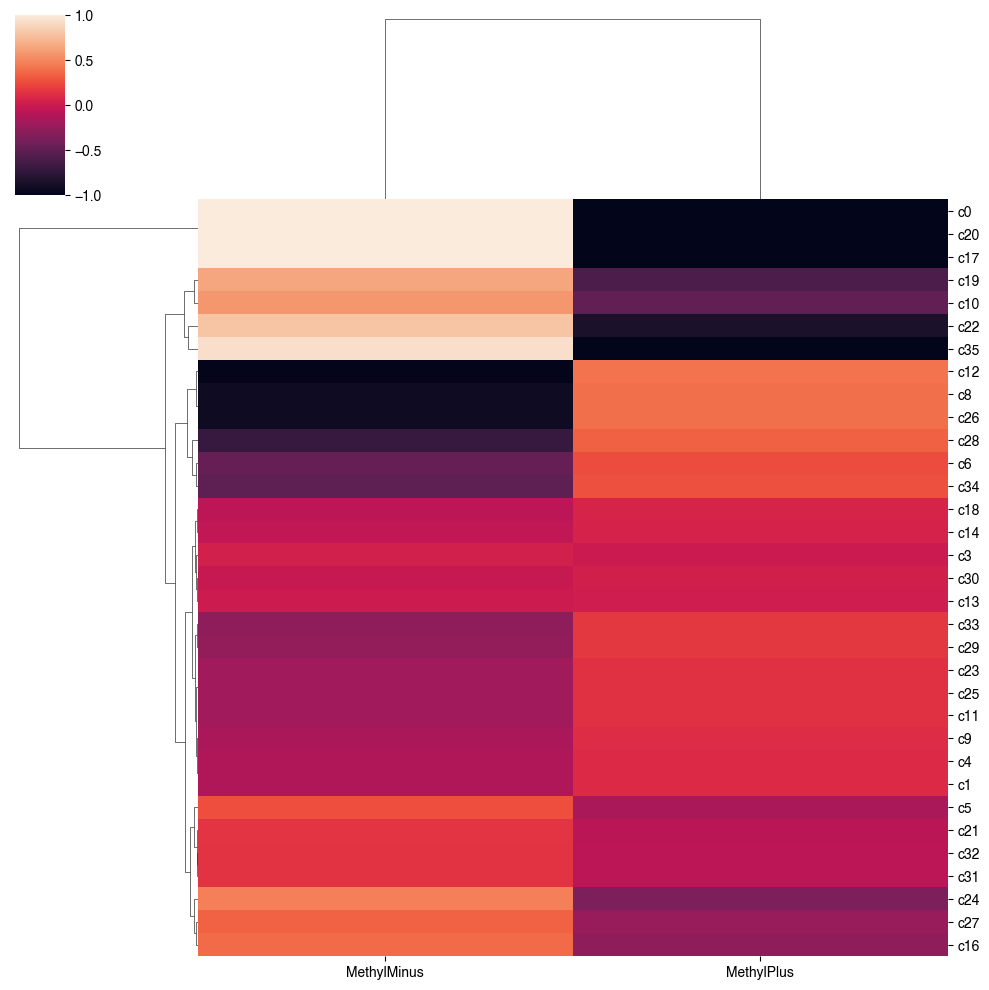
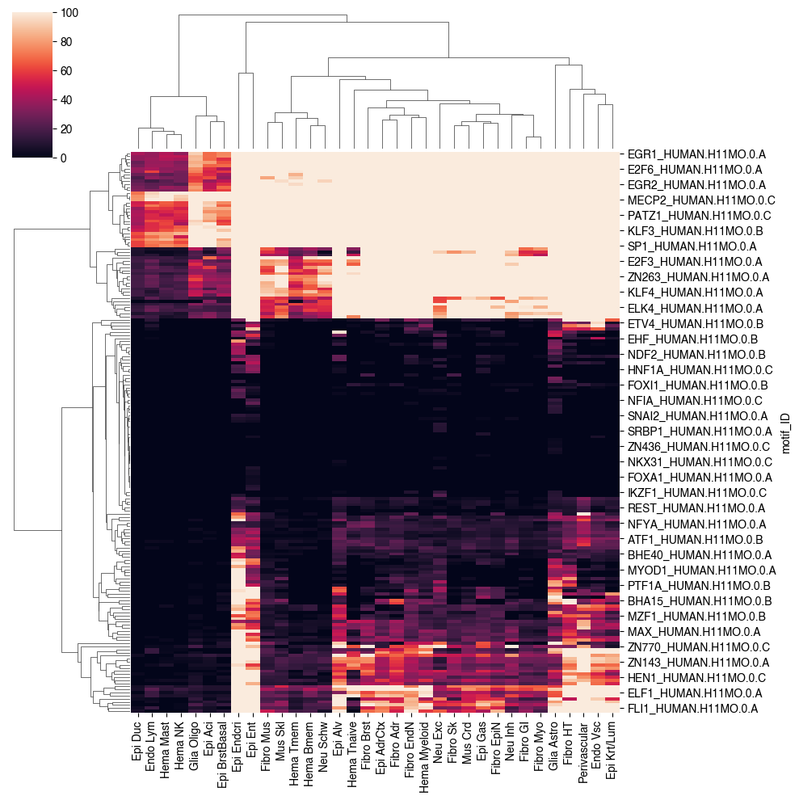
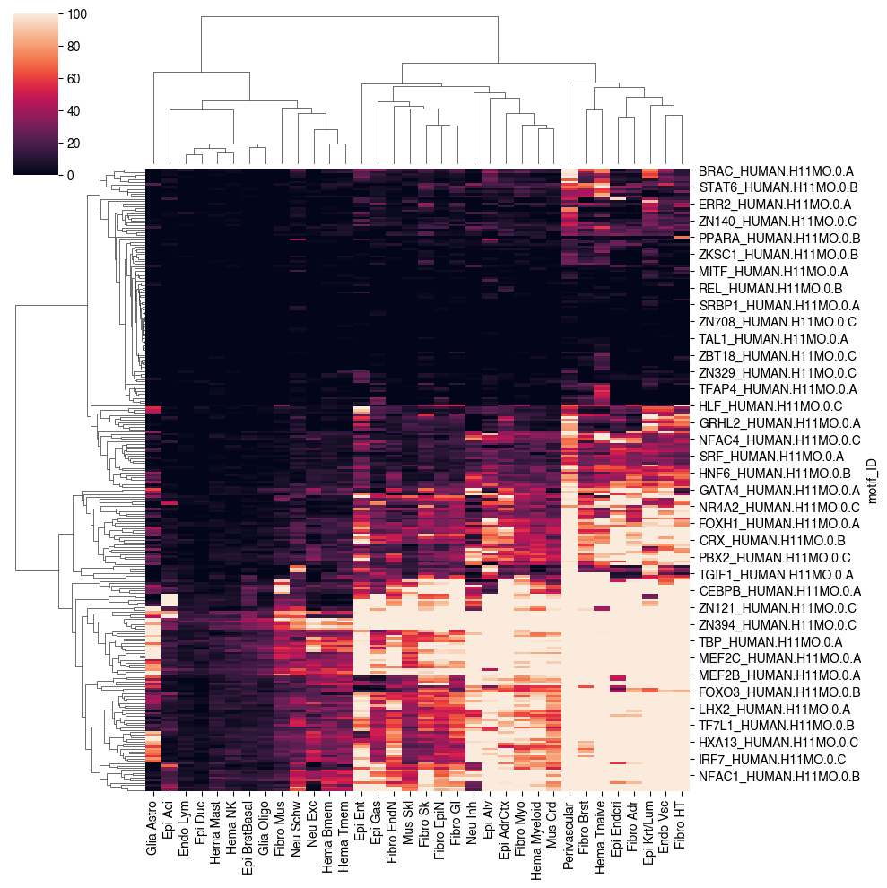
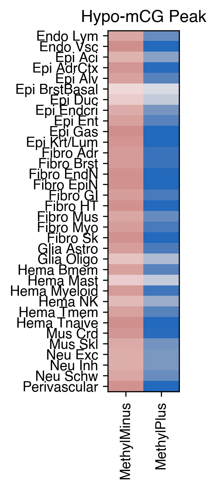
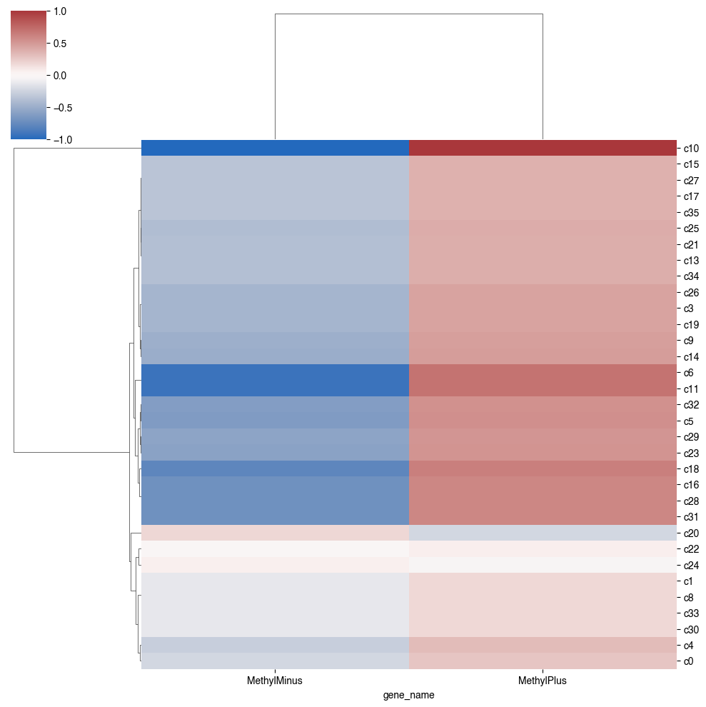
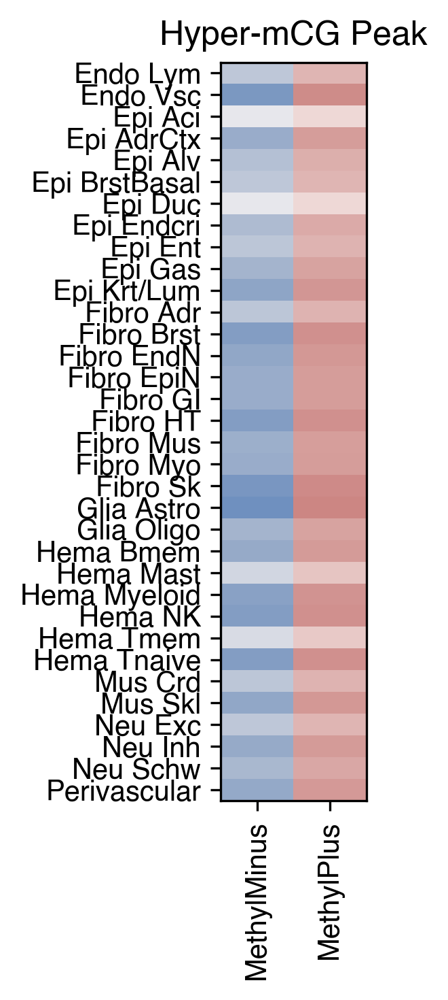
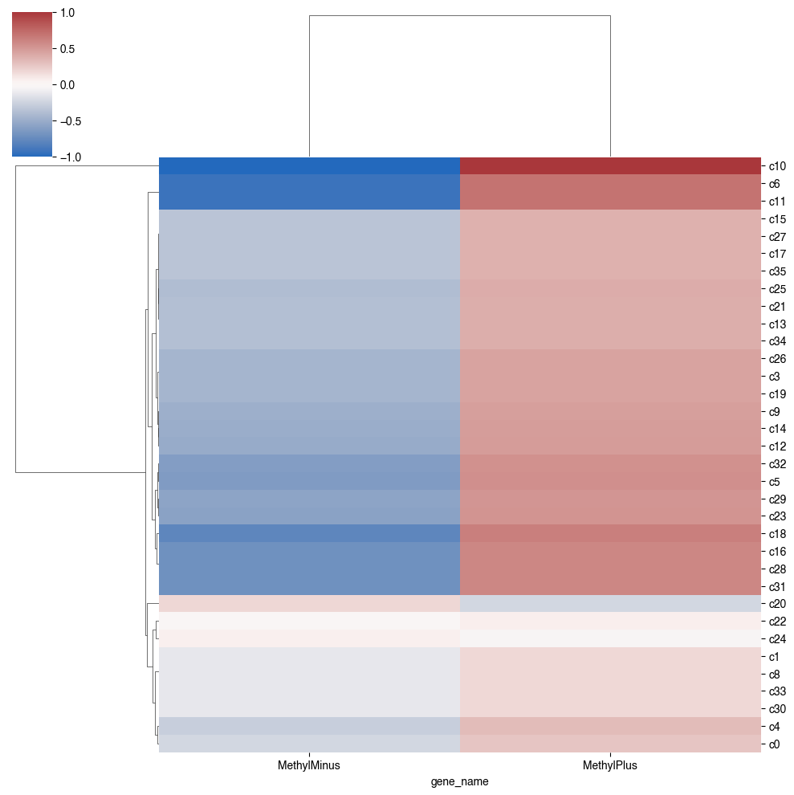

16. Peak mCG motif#
Part of the Fig. 2 chapter — see it for the panel-by-panel map. The first code cell sets ENTEX_ROOT and activates the no-overwrite guard (see the Reproduction guide). Outputs shown are the author’s original run.
📥 Required input files#
This notebook reads the following files (paths resolve from ENTEX_ROOT/REF_ROOT; the setup cell sets them). See the chapter’s inputs.md for RAW-vs-derived tags.
f'{indir}L1color.tsv'· metadata: colorf'{indir}merged_allc/subtype_globalCG.csv.gz'· sc/pseudobulk mC (allc)f'{peakdir}peak_majortype_CGN.mcds'· mC matrix (mcds)f'{peakdir}{ct}.bed'· otherf'{REF_ROOT}/aertslab_motif_colleciton/v10nr_clust_public/snapshots/motifs-v10-nr.hgnc-m0.00001-o0.0.tbl'· referencef'{REF_ROOT}/aertslab_motif_colleciton/motifs.txt'· referencef'{REF_ROOT}/yin_2017_motif_type.csv'· referencef'{outdir}HOCOMOCOv11_core_motif_list.txt'· other
# === Reproduction setup — edit ENTEX_ROOT / REF_ROOT for your machine ===
import os, sys
ENTEX_ROOT = os.environ.get('ENTEX_ROOT', '/large_storage/zhoulab/zhoujt/project/ENTEx')
REF_ROOT = os.environ.get('REF_ROOT', '/large_storage/zhoulab/ref')
BOOK_ROOT = os.environ.get('BOOK_ROOT', f'{ENTEX_ROOT}/analysis/HumanCellEpigenomeAtlas')
sys.path.insert(0, BOOK_ROOT)
os.chdir(f'{ENTEX_ROOT}/analysis') # original working directory
import repro_guard # no-overwrite guard (default: skip existing)
cd /large_storage/zhoulab/zhoujt/project/ENTEx/scATAC/peak/majortype/
allcools generate-dataset --allc_table /large_storage/zhoulab/zhoujt/project/ENTEx/merged_allc/L1/CGN/allclist_majortype.tsv \
--output_path peak_majortype_CGN.mcds \
--chrom_size_path /large_storage/zhoulab/ref/hg38/fasta/hg38.main.chrom.sizes \
--obs_dim majortype \
--cpu 32 \
--chunk_size 1 \
--regions peak concat_peak.bed \
--quantifiers peak count CGN
import os
import numpy as np
import pandas as pd
from glob import glob
from scipy.sparse import csr_matrix
from scipy.stats import zscore
from concurrent.futures import ProcessPoolExecutor, as_completed
import anndata
from ALLCools.mcds import MCDS, RegionDS
from ALLCools.clustering import *
from ALLCools.plot import *
import seaborn as sns
import matplotlib as mpl
import matplotlib.pyplot as plt
mpl.style.use('default')
mpl.rcParams['pdf.fonttype'] = 42
mpl.rcParams['ps.fonttype'] = 42
mpl.rcParams['font.family'] = 'sans-serif'
mpl.rcParams['font.sans-serif'] = 'Helvetica'
import warnings
warnings.filterwarnings("ignore")
indir = f'{ENTEX_ROOT}/'
peakdir = f'{indir}scATAC/peak/majortype/'
outdir = f'{indir}analysis/mCG_peak_motif/'
L1_meta = pd.read_csv(f'{indir}L1color.tsv', sep='\t', header=0, index_col=0)
# L1_meta = L1_meta.drop(['c35', 'c36'], axis=0)
L1_meta = L1_meta.drop(['c7'], axis=0)
L1_annot = L1_meta['L1_abbr'].to_dict()
L1_color = L1_meta['color'].to_dict()
L1_color.update({L1_annot[k]: L1_color[k] for k in L1_annot if k in L1_color}) # also key by name
import cooler
chrom_size_path = f'{REF_ROOT}/hg38/fasta/hg38.main.chrom.sizes'
chrom_sizes = cooler.read_chromsizes(chrom_size_path, all_names=True)
chrom_sizes = chrom_sizes.iloc[:22]
global_mc = pd.read_csv(f'{indir}merged_allc/subtype_globalCG.csv.gz', index_col=0, header=0)
global_mc['L1'] = global_mc.index.str.split('-').str[0]
global_mc.loc[global_mc['L1']=='c7', 'L1'] = 'c35'
global_mc.loc['c7-b1', 'L1'] = 'c36'
global_mc = global_mc.groupby('L1').sum()
global_mc['ratio'] = global_mc['mc'] / global_mc['cov']
mcds = MCDS.open(f'{peakdir}peak_majortype_CGN.mcds', obs_dim='majortype', var_dim='peak')
mcds
<xarray.MCDS> Size: 305MB
Dimensions: (count_type: 2, majortype: 37, peak: 810407)
Coordinates:
* count_type (count_type) <U3 24B 'mc' 'cov'
* majortype (majortype) <U3 444B 'c0' 'c10' 'c11' 'c12' ... 'c7' 'c8' 'c9'
mc_type <U3 12B 'CGN'
* peak (peak) <U11 36MB 'peak_0' 'peak_1' ... 'peak_810406'
peak_chrom (peak) <U5 16MB ...
peak_end (peak) int64 6MB ...
peak_start (peak) int64 6MB ...
Data variables:
peak_da (majortype, peak, count_type) uint32 240MB dask.array<chunksize=(1, 101301, 1), meta=np.ndarray>
Attributes:
obs_dim: majortype
var_dim: peakmcds.add_mc_frac(normalize_per_cell=False)
data_all = mcds['peak_da_frac'].to_pandas().drop(['c7'], axis=0)
data_all
| peak | peak_0 | peak_1 | peak_2 | peak_3 | peak_4 | peak_5 | peak_6 | peak_7 | peak_8 | peak_9 | ... | peak_810397 | peak_810398 | peak_810399 | peak_810400 | peak_810401 | peak_810402 | peak_810403 | peak_810404 | peak_810405 | peak_810406 |
|---|---|---|---|---|---|---|---|---|---|---|---|---|---|---|---|---|---|---|---|---|---|
| majortype | |||||||||||||||||||||
| c0 | 0.721878 | 0.012066 | 0.927741 | 0.441268 | 0.824356 | 0.099239 | 0.940387 | 0.861528 | 0.161527 | 0.834783 | ... | 0.198782 | 0.946250 | 0.860211 | 0.356655 | 0.900283 | 0.717487 | 0.005798 | 0.325634 | 0.819669 | 0.609598 |
| c10 | 0.720289 | 0.014993 | 0.767153 | 0.862450 | 0.722288 | 0.120499 | 0.968925 | 0.913555 | 0.329666 | 0.953753 | ... | 0.215578 | 0.916857 | 0.776934 | 0.476920 | 0.955253 | 0.973866 | 0.011341 | 0.939117 | 0.703436 | 0.667502 |
| c11 | 0.616812 | 0.008934 | 0.691791 | 0.764476 | 0.753512 | 0.132541 | 0.930215 | 0.543107 | 0.159578 | 0.786943 | ... | 0.214941 | 0.898488 | 0.391658 | 0.319456 | 0.875208 | 0.826278 | 0.004790 | 0.838061 | 0.747760 | 0.573518 |
| c12 | 0.649349 | 0.010786 | 0.533311 | 0.649349 | 0.770333 | 0.175376 | 0.916179 | 0.565455 | 0.146361 | 0.879835 | ... | 0.229113 | 0.888026 | 0.325291 | 0.477338 | 0.925363 | 0.874014 | 0.005321 | 0.819604 | 0.762966 | 0.597441 |
| c13 | 0.677904 | 0.001820 | 0.580796 | 0.809536 | 0.694442 | 0.560645 | 0.921943 | 0.645880 | 0.169954 | 0.706603 | ... | 0.226356 | 0.911084 | 0.752531 | 0.193034 | 0.867107 | 0.889902 | 0.002866 | 0.919294 | 0.708504 | 0.583346 |
| c14 | 0.701491 | 0.024971 | 0.829195 | 0.842713 | 0.746737 | 0.096377 | 0.954313 | 0.037912 | 0.094894 | 0.843129 | ... | 0.186622 | 0.933621 | 0.087248 | 0.291395 | 0.953284 | 0.946401 | 0.009422 | 0.850337 | 0.744309 | 0.652296 |
| c15 | 0.782547 | 0.009901 | 0.934132 | 0.782547 | 0.836277 | 0.262739 | 0.966649 | 0.910088 | 0.112906 | 0.987874 | ... | 0.118891 | 0.951685 | 0.873403 | 0.585824 | 0.974393 | 0.950432 | 0.008211 | 0.912147 | 0.857590 | 0.599438 |
| c16 | 0.799177 | 0.035932 | 0.881328 | 0.799177 | 0.731389 | 0.341682 | 0.963934 | 0.286915 | 0.371992 | 0.819240 | ... | 0.207792 | 0.948047 | 0.465108 | 0.686621 | 0.974885 | 0.967749 | 0.012809 | 0.940316 | 0.702263 | 0.666873 |
| c17 | 0.635298 | 0.011147 | 0.616916 | 0.635298 | 0.738479 | 0.076835 | 0.897127 | 0.831230 | 0.076869 | 0.694473 | ... | 0.234532 | 0.905615 | 0.539251 | 0.510730 | 0.749169 | 0.872659 | 0.006487 | 0.858353 | 0.744132 | 0.651685 |
| c18 | 0.643519 | 0.008178 | 0.111100 | 0.838244 | 0.809797 | 0.023077 | 0.930459 | 0.877333 | 0.111108 | 0.813917 | ... | 0.235931 | 0.927778 | 0.198339 | 0.231829 | 0.780264 | 0.918355 | 0.006028 | 0.909850 | 0.826051 | 0.656118 |
| c19 | 0.603799 | 0.020589 | 0.737010 | 0.871498 | 0.752891 | 0.277006 | 0.925900 | 0.152687 | 0.078734 | 0.838470 | ... | 0.234850 | 0.902250 | 0.501127 | 0.213540 | 0.903254 | 0.893905 | 0.006846 | 0.736503 | 0.779508 | 0.632443 |
| c1 | 0.652605 | 0.010021 | 0.809431 | 0.472107 | 0.883872 | 0.376322 | 0.938432 | 0.862930 | 0.120729 | 0.858396 | ... | 0.169744 | 0.937669 | 0.394516 | 0.711269 | 0.919267 | 0.469625 | 0.007497 | 0.927206 | 0.914213 | 0.623886 |
| c20 | 0.657064 | 0.016440 | 0.327090 | 0.657064 | 0.805318 | 0.024026 | 0.904096 | 0.845535 | 0.105443 | 0.234442 | ... | 0.113997 | 0.943870 | 0.646539 | 0.192787 | 0.404058 | 0.436615 | 0.007419 | 0.924742 | 0.780273 | 0.536411 |
| c21 | 0.645162 | 0.013187 | 0.735615 | 0.843438 | 0.771752 | 0.283408 | 0.905677 | 0.064362 | 0.128201 | 0.830288 | ... | 0.235572 | 0.894931 | 0.044474 | 0.251226 | 0.932595 | 0.827562 | 0.007569 | 0.701598 | 0.762319 | 0.609151 |
| c22 | 0.610445 | 0.005704 | 0.712997 | 0.610445 | 0.697426 | 0.021785 | 0.904110 | 0.885409 | 0.101115 | 0.073931 | ... | 0.198642 | 0.799050 | 0.528702 | 0.254999 | 0.822777 | 0.903549 | 0.007815 | 0.909195 | 0.702557 | 0.548881 |
| c23 | 0.630027 | 0.006830 | 0.794856 | 0.845425 | 0.769476 | 0.126599 | 0.921956 | 0.599822 | 0.113368 | 0.812373 | ... | 0.238139 | 0.899468 | 0.418466 | 0.435549 | 0.821506 | 0.876687 | 0.005755 | 0.849363 | 0.798871 | 0.588759 |
| c24 | 0.733721 | 0.006665 | 0.932925 | 0.733721 | 0.825231 | 0.130453 | 0.941950 | 0.463710 | 0.110263 | 0.926251 | ... | 0.215761 | 0.919337 | 0.822164 | 0.460358 | 0.972667 | 0.873940 | 0.006797 | 0.244509 | 0.823233 | 0.601956 |
| c25 | 0.703199 | 0.010564 | 0.454058 | 0.703199 | 0.770704 | 0.084915 | 0.937883 | 0.902576 | 0.109470 | 0.905457 | ... | 0.273702 | 0.885219 | 0.605650 | 0.160952 | 0.814243 | 0.936007 | 0.006242 | 0.943853 | 0.814415 | 0.709411 |
| c26 | 0.694068 | 0.010703 | 0.736827 | 0.694068 | 0.745563 | 0.228705 | 0.929739 | 0.713894 | 0.130357 | 0.804496 | ... | 0.219804 | 0.912242 | 0.478043 | 0.340775 | 0.933393 | 0.916277 | 0.003974 | 0.796287 | 0.738789 | 0.562952 |
| c27 | 0.748480 | 0.010181 | 0.921010 | 0.857716 | 0.825442 | 0.283078 | 0.956348 | 0.836908 | 0.170534 | 0.900061 | ... | 0.139688 | 0.939334 | 0.868824 | 0.524470 | 0.963010 | 0.262727 | 0.004773 | 0.804497 | 0.822185 | 0.590505 |
| c28 | 0.620177 | 0.003753 | 0.754301 | 0.779017 | 0.758000 | 0.270275 | 0.916158 | 0.603054 | 0.091364 | 0.934141 | ... | 0.231044 | 0.907692 | 0.473893 | 0.271809 | 0.895130 | 0.887576 | 0.006544 | 0.833057 | 0.790456 | 0.619106 |
| c29 | 0.670710 | 0.014945 | 0.705825 | 0.790805 | 0.746958 | 0.310560 | 0.911352 | 0.783204 | 0.148573 | 0.840874 | ... | 0.249989 | 0.892941 | 0.416785 | 0.306399 | 0.845138 | 0.914734 | 0.006791 | 0.863043 | 0.720647 | 0.586722 |
| c2 | 0.565222 | 0.008449 | 0.201306 | 0.769861 | 0.017262 | 0.118511 | 0.913053 | 0.929028 | 0.043535 | 0.497336 | ... | 0.069644 | 0.628778 | 0.057779 | 0.074596 | 0.481974 | 0.939338 | 0.006735 | 0.970543 | 0.006889 | 0.528832 |
| c30 | 0.684737 | 0.009144 | 0.463592 | 0.684737 | 0.703057 | 0.258883 | 0.925303 | 0.892544 | 0.096618 | 0.591908 | ... | 0.220065 | 0.891068 | 0.127271 | 0.201943 | 0.911980 | 0.917965 | 0.004403 | 0.939332 | 0.713169 | 0.574446 |
| c31 | 0.723616 | 0.009019 | 0.667090 | 0.864235 | 0.716845 | 0.081862 | 0.946911 | 0.102914 | 0.046939 | 0.894500 | ... | 0.183948 | 0.961093 | 0.328689 | 0.342281 | 0.963367 | 0.960354 | 0.009090 | 0.938608 | 0.715525 | 0.635710 |
| c32 | 0.613057 | 0.008919 | 0.704112 | 0.613057 | 0.761423 | 0.264233 | 0.917117 | 0.625133 | 0.062021 | 0.829585 | ... | 0.241448 | 0.965195 | 0.467163 | 0.407639 | 0.903819 | 0.875027 | 0.003684 | 0.874493 | 0.783039 | 0.661414 |
| c33 | 0.682827 | 0.008322 | 0.686233 | 0.682827 | 0.793103 | 0.667313 | 0.920044 | 0.063909 | 0.075481 | 0.906304 | ... | 0.235272 | 0.928117 | 0.552328 | 0.298976 | 0.964555 | 0.957337 | 0.005879 | 0.776201 | 0.810006 | 0.631700 |
| c34 | 0.687856 | 0.008844 | 0.741194 | 0.687856 | 0.725126 | 0.104879 | 0.933705 | 0.780202 | 0.110310 | 0.866362 | ... | 0.132949 | 0.953197 | 0.498386 | 0.211778 | 0.917032 | 0.866113 | 0.006521 | 0.896470 | 0.696870 | 0.646380 |
| c35 | 0.565777 | 0.016778 | 0.508570 | 0.688930 | 0.931098 | 0.424824 | 0.942772 | 0.869333 | 0.091897 | 0.780724 | ... | 0.208275 | 0.907752 | 0.299915 | 0.445028 | 0.909808 | 0.884598 | 0.009308 | 0.606322 | 0.963542 | 0.631702 |
| c36 | 0.775285 | 0.020634 | 0.888466 | 0.775285 | 0.822039 | 0.370742 | 0.955803 | 0.954249 | 0.119848 | 0.932473 | ... | 0.144947 | 0.983834 | 0.922739 | 0.390085 | 0.971652 | 0.962450 | 0.012230 | 0.717339 | 0.839473 | 0.591862 |
| c3 | 0.639346 | 0.005750 | 0.688294 | 0.639346 | 0.735057 | 0.172953 | 0.924154 | 0.446457 | 0.132905 | 0.840646 | ... | 0.174994 | 0.926982 | 0.679887 | 0.216531 | 0.905689 | 0.898344 | 0.008627 | 0.855496 | 0.682224 | 0.576225 |
| c4 | 0.624015 | 0.012163 | 0.069250 | 0.546539 | 0.848881 | 0.007910 | 0.926453 | 0.787702 | 0.093198 | 0.861079 | ... | 0.264285 | 0.834872 | 0.461850 | 0.100158 | 0.567366 | 0.936688 | 0.008515 | 0.924341 | 0.887101 | 0.539782 |
| c5 | 0.621020 | 0.013864 | 0.638120 | 0.621020 | 0.796230 | 0.014211 | 0.942393 | 0.629745 | 0.123208 | 0.628674 | ... | 0.232906 | 0.899632 | 0.330070 | 0.627154 | 0.931908 | 0.874147 | 0.009343 | 0.834326 | 0.816941 | 0.662087 |
| c6 | 0.648973 | 0.012384 | 0.800559 | 0.897049 | 0.758421 | 0.255409 | 0.916982 | 0.765496 | 0.101278 | 0.862902 | ... | 0.186726 | 0.938680 | 0.409873 | 0.282121 | 0.874059 | 0.891619 | 0.008437 | 0.846790 | 0.747880 | 0.586151 |
| c8 | 0.664574 | 0.014254 | 0.035185 | 0.664574 | 0.936071 | 0.011802 | 0.914248 | 0.921520 | 0.105646 | 0.849227 | ... | 0.224187 | 0.888182 | 0.578296 | 0.126799 | 0.922882 | 0.957497 | 0.007986 | 0.954765 | 0.974113 | 0.680133 |
| c9 | 0.655791 | 0.006598 | 0.494250 | 0.413386 | 0.762607 | 0.016332 | 0.147204 | 0.926655 | 0.095240 | 0.687024 | ... | 0.216778 | 0.861663 | 0.330468 | 0.474726 | 0.883314 | 0.878246 | 0.005106 | 0.865197 | 0.750501 | 0.587351 |
36 rows × 810407 columns
peak = mcds[['peak_chrom', 'peak_start', 'peak_end']].to_pandas().drop(['mc_type'], axis=1)
peak.columns = ['chrom', 'start', 'end']
peak
| chrom | start | end | |
|---|---|---|---|
| peak | |||
| peak_0 | chr1 | 9955 | 10355 |
| peak_1 | chr1 | 29163 | 29563 |
| peak_2 | chr1 | 79215 | 79615 |
| peak_3 | chr1 | 180580 | 180980 |
| peak_4 | chr1 | 181273 | 181673 |
| ... | ... | ... | ... |
| peak_810402 | chr22 | 50780226 | 50780626 |
| peak_810403 | chr22 | 50783437 | 50783837 |
| peak_810404 | chr22 | 50785276 | 50785676 |
| peak_810405 | chr22 | 50806937 | 50807337 |
| peak_810406 | chr22 | 50807835 | 50808235 |
810407 rows × 3 columns
hypo = (data_all<(global_mc.loc[data_all.index, ['ratio']].values-0.3))
hyper = (data_all>(global_mc.loc[data_all.index, ['ratio']].values+0.1))
print((hypo.sum(axis=0)>0).sum(), (hyper.sum(axis=0)>0).sum())
639681 660656
print(1)
fig, axes = plt.subplots(2, 1, figsize=(5,4), dpi=300, sharex='all')
ax = axes[0]
sns.histplot(hypo.sum(axis=0), bins=37, binrange=(0,37), ax=ax)
# ax.set_yscale('log')
ax.set_title('# Hypo Methylated Subtypes')
ax = axes[1]
sns.histplot(hyper.sum(axis=0), bins=37, binrange=(0,37), ax=ax)
ax.set_xlim([-1, 38])
ax.set_title('# Hyper Methylated Subtypes')
fig.tight_layout()
# fig.savefig('DMR/DMR_hypohypercount_subtype.pdf', transparent=True)
1

peak = peak.reset_index()
peak.index = peak['chrom'].astype(str) + ':' + peak['start'].astype(str) + '-' + peak['end'].astype(str)
peak_all = []
for ct in L1_meta.index:
if not os.path.isfile(f'{peakdir}{ct}.bed'):
continue
peak_tmp = pd.read_csv(f'{peakdir}{ct}.bed', sep='\t', header=None, index_col=None)
peak_tmp.columns = ['chrom', 'start', 'end']
peak_tmp.index = peak_tmp['chrom'].astype(str) + ':' + peak_tmp['start'].astype(str) + '-' + peak_tmp['end'].astype(str)
peak_tmp['mCG'] = data_all.loc[ct, peak.loc[peak_tmp.index, 'peak'].values].values
peak_tmp['majortype'] = ct
peak_all.append(peak_tmp)
print(ct)
c33
c3
c22
c9
c20
c25
c30
c13
c8
c4
c18
c29
c17
c19
c28
c6
c11
c32
c34
c23
c31
c14
c35
c24
c0
c27
c1
c15
c26
c5
c10
c16
c21
c12
peak_all = pd.concat(peak_all, axis=0)
peak_mid = peak_all.groupby('majortype')['mCG'].median()
peak_ave = peak_all.groupby('majortype')['mCG'].mean()
# leg_order = peak_ave.sort_values().index
leg_order = global_mc['ratio'].sort_values().index
leg_order = leg_order[leg_order.isin(peak_all['majortype'])]
fig, ax = plt.subplots(figsize=(6, 2.5), dpi=300)
sns.violinplot(peak_all, x='majortype', y='mCG', palette=L1_color,
order=leg_order, ax=ax, inner=None)
ax.set_xticks(np.arange(len(leg_order)))
ax.set_xticklabels(leg_order.map(L1_annot), rotation=90)
fig.tight_layout()
fig.savefig(f'{outdir}peak_mCG_violin.pdf', transparent=True)

mid = (peak_all['start'] + peak_all['end']) // 2
peak_all['start'] = mid - 500
peak_all['end'] = mid + 500
peak_all = peak_all.loc[(peak_all['start']>0) & (peak_all['end']<peak_all['chrom'].map(chrom_sizes))]
for ct,peak_tmp in peak_all.groupby('majortype'):
os.makedirs(f'{outdir}{ct}/bed/hypo/', exist_ok=True)
os.makedirs(f'{outdir}{ct}/bed/hyper/', exist_ok=True)
peak_hypo = peak_tmp.loc[peak_tmp['mCG']<0.1]
peak_hyper = peak_tmp.loc[peak_tmp['mCG']>(global_mc.loc[ct, 'ratio']+0.1)]
peak_hypo[['chrom', 'start', 'end']].to_csv(f'{outdir}{ct}/bed/hypo/{ct}.bed', sep='\t', header=False, index=False)
peak_hyper[['chrom', 'start', 'end']].to_csv(f'{outdir}{ct}/bed/hyper/{ct}.bed', sep='\t', header=False, index=False)
print(ct, peak_hypo.shape[0], peak_hyper.shape[0])
c0 54510 5433
c1 37272 1484
c10 50126 2104
c11 51813 10084
c12 54025 22420
c13 61274 18933
c14 48352 830
c15 29700 5426
c16 28422 2796
c17 58263 10039
c18 52962 12061
c19 54558 5121
c20 65804 12069
c21 49237 2213
c22 58293 1337
c23 62225 5648
c24 38409 579
c25 64200 776
c26 52532 4033
c27 30098 387
c28 63342 4401
c29 41882 5592
c3 49599 10531
c30 51123 497
c31 34659 2816
c32 40420 1280
c33 46781 687
c34 47246 3617
c35 41992 1750
c4 71641 7507
c5 50589 2625
c6 51476 3414
c8 77562 19141
c9 46239 5242
## summit/loop ATAC peak enriched motif
for i in `seq 1 35`; do (
ct=c${i}
dbdir=/large_storage/zhoulab/zhoujt/project/ENTEx/analysis/loop_peak_motif
outdir=/large_storage/zhoulab/zhoujt/project/ENTEx/analysis/mCG_peak_motif
if test -e "${outdir}/${ct}/bed/hypo/${ct}.bed"; then
scenicplus grn_inference motif_enrichment_cistarget \
--region_set_folder ${outdir}/${ct}/bed \
--cistarget_db_fname ${dbdir}/${ct}/merge_peak.regions_vs_motifs.rankings.feather \
--output_fname_cistarget_result ${outdir}/${ct}/ctx_results.hdf5 \
--temp_dir ${outdir}/${ct}/tmp \
--species "homo_sapiens" \
--fr_overlap_w_ctx_db 0.9 \
--auc_threshold 0.005 \
--nes_threshold 3.0 \
--rank_threshold 0.05 \
--path_to_motif_annotations f"{REF_ROOT}/aertslab_motif_colleciton/v10nr_clust_public/snapshots/motifs-v10-nr.hgnc-m0.00001-o0.0.tbl" \
--annotation_version "v10nr_clust" \
--motif_similarity_fdr 0.001 \
--orthologous_identity_threshold 0.0 \
--annotations_to_use "Direct_annot Orthology_annot" \
--write_html \
--output_fname_cistarget_html ${outdir}/${ct}/ctx_results.html \
--n_cpu 32
fi
)
done
motif = pd.read_csv(f'{REF_ROOT}/aertslab_motif_colleciton/v10nr_clust_public/snapshots/motifs-v10-nr.hgnc-m0.00001-o0.0.tbl', sep='\t', header=0, index_col=0)
motif
| motif_name | motif_description | source_name | source_version | gene_name | motif_similarity_qvalue | similar_motif_id | similar_motif_description | orthologous_identity | orthologous_gene_name | orthologous_species | description | |
|---|---|---|---|---|---|---|---|---|---|---|---|---|
| #motif_id | ||||||||||||
| metacluster_196.3 | EcR_usp | EcR/usp | bergman | 1.1 | HNF4A | 0.000000e+00 | NaN | NaN | 0.270042 | FBgn0003964 | D. melanogaster | gene is orthologous to FBgn0003964 in D. melan... |
| metacluster_196.3 | EcR_usp | EcR/usp | bergman | 1.1 | HNF4G | 0.000000e+00 | NaN | NaN | 0.276923 | FBgn0003964 | D. melanogaster | gene is orthologous to FBgn0003964 in D. melan... |
| metacluster_196.3 | EcR_usp | EcR/usp | bergman | 1.1 | NR1D1 | 0.000000e+00 | NaN | NaN | 0.157980 | FBgn0000546 | D. melanogaster | gene is orthologous to FBgn0000546 in D. melan... |
| metacluster_196.3 | EcR_usp | EcR/usp | bergman | 1.1 | NR1D2 | 0.000000e+00 | NaN | NaN | 0.170984 | FBgn0000546 | D. melanogaster | gene is orthologous to FBgn0000546 in D. melan... |
| metacluster_196.3 | EcR_usp | EcR/usp | bergman | 1.1 | NR1H2 | 0.000000e+00 | NaN | NaN | 0.317391 | FBgn0000546 | D. melanogaster | gene is orthologous to FBgn0000546 in D. melan... |
| ... | ... | ... | ... | ... | ... | ... | ... | ... | ... | ... | ... | ... |
| metacluster_179.4 | YPL089C_419 | YPL089C_419 | yetfasco | 1.02 | MEF2A | 4.378370e-06 | metacluster_179.4 | BORCS8-MEF2B[gene ID: ENSG00000064489 species:... | 1.000000 | NaN | NaN | motif similar to cisbp__M08212 ('BORCS8-MEF2B[... |
| metacluster_145.8 | YPR052C_879 | YPR052C_879 | yetfasco | 1.02 | HOXB7 | 1.918920e-06 | cisbp__M00332 | HOXB7[gene ID: ENSG00000260027 species: Homo s... | 1.000000 | NaN | NaN | motif similar to cisbp__M00332 ('HOXB7[gene ID... |
| metacluster_145.8 | YPR052C_879 | YPR052C_879 | yetfasco | 1.02 | TBP | 7.388670e-08 | metacluster_145.8 | V$TBP_06: Tbp | 0.911504 | ENSMUSG00000014767 | M. musculus | gene is orthologous to ENSMUSG00000014767 in M... |
| metacluster_145.8 | YPR052C_879 | YPR052C_879 | yetfasco | 1.02 | TBPL2 | 4.890880e-06 | jaspar__MA0386.1 | SPT15 | 0.629167 | YER148W | S. cerevisiae | motif similar to jaspar__MA0386.1 ('SPT15'; q-... |
| yetfasco__YPR086W_1327 | YPR086W_1327 | YPR086W_1327 | yetfasco | 1.02 | GTF2B | 0.000000e+00 | NaN | NaN | 0.357595 | YPR086W | S. cerevisiae | gene is orthologous to YPR086W in S. cerevisia... |
253096 rows × 12 columns
/large_storage/zhoulab/ref/motif_databases/JASPAR/JASPAR2024_CORE_non-redundant_pfms.meme
description
[motif, similar, to] 120369
[gene, is, annotated] 85696
[gene, is, directly] 22353
[gene, is, orthologous] 21017
[motif, is, annotated] 3661
Name: count, dtype: int64
motif = motif.loc[motif['description'].str.split(' ').str[0]=='gene']
motif.shape
(129066, 12)
motif_list = pd.read_csv(f'{REF_ROOT}/aertslab_motif_colleciton/motifs.txt', index_col=0, header=None).index
motif_list = motif_list.str.replace('.cb','')
motif_list.isin(motif.index).sum()
4219
motif = motif.loc[motif.index.isin(motif_list)]
print(motif.shape)
(73372, 12)
motif.loc[(motif['gene_name']=='CTCF') & (motif['description']=='gene is directly annotated')].index.unique()
Index(['metacluster_159.3', 'metacluster_132.2', 'metacluster_101.6',
'metacluster_101.5', 'metacluster_126.7',
'kznf__CTCF_Rhee2011.2_ChIP-exo', 'kznf__CTCF_Rhee2011.3_ChIP-exo',
'kznf__CTCF_Transfac.4_Transfac', 'kznf__CTCF_Transfac.5_Transfac',
'kznf__CTCF_Transfac.6_Transfac', 'kznf__CTCF_Transfac.7_Transfac',
'kznf__CTCF_Transfac.8_Transfac'],
dtype='object', name='#motif_id')
#tf2call['Call'].unique()
callmap = {'MethylPlus':'MethylPlus',
'MethylMinus':'MethylMinus',
'Little effect and MethylMinus':'MethylMinus',
'MethylMinus and MethylPlus':'no info',
'Little effect and MethylPlus':'MethylPlus',
'MethylPlus and Little effect':'MethylPlus',
'MethylMinus and Little effect':'MethylMinus',
'MethylPlus and MethylMinus':'no info',
'Little effect':'Little effect',
'inconclusive':'no info'
}
motif_mc_annot = pd.read_csv(f'{REF_ROOT}/yin_2017_motif_type.csv', header=0, index_col=0)
motif_mc_annot = motif_mc_annot.loc[~motif_mc_annot.index.isna()]
motif_mc_annot['Call'] = motif_mc_annot['Call'].map(callmap)
motif_mc_annot = motif_mc_annot.loc[motif_mc_annot.index.isin(motif['gene_name'])]
motif_mc_annot
| clone type | Call | methyl-SELEX call | bisulfite call | comment | seed used for bisulfite SELEX | start position of CG | enrichment of mCG | CG frequency | TG frequency | CG frequency.1 | TG frequency.1 | CG frequency.2 | TG frequency.2 | CG frequency.3 | TG frequency.3 | |
|---|---|---|---|---|---|---|---|---|---|---|---|---|---|---|---|---|
| TF name | ||||||||||||||||
| ALX3 | eDBD | MethylPlus | MethylPlus | low complexity motif | low complexity motif | TTAAYGAW | 5.0 | 50.00% | 0.10 | 0.07 | 0.04 | 0.19 | 0.11 | 0.07 | 0.06 | 0.16 |
| CDX4 | FL | MethylPlus | MethylPlus | MethylPlus | concordant | NGTYGTAAAWN | 4.0 | 59.23% | 0.45 | 0.03 | 0.13 | 0.26 | 0.52 | 0.02 | 0.23 | 0.17 |
| CDX4 | eDBD | MethylPlus | MethylPlus | MethylPlus | concordant | NGTYGTAAAAN | 4.0 | 164.71% | 0.27 | 0.02 | 0.04 | 0.16 | 0.31 | 0.02 | 0.12 | 0.10 |
| CEBPB | eDBD | MethylPlus | Little effect | weak MethylPlus | effect revealed by bisulfite | NRTTGYGYAAYN | 6.0 | 14.83% | 0.54 | 0.10 | 0.29 | 0.44 | 0.61 | 0.09 | 0.37 | 0.41 |
| CEBPE | eDBD | MethylPlus | Little effect | weak MethylPlus | effect revealed by bisulfite | NRTTGYGYAAYN | 6.0 | 12.01% | 0.60 | 0.07 | 0.31 | 0.41 | 0.71 | 0.06 | 0.40 | 0.39 |
| ... | ... | ... | ... | ... | ... | ... | ... | ... | ... | ... | ... | ... | ... | ... | ... | ... |
| ZNF177 | eDBD | no info | MethylMinus | weak MethylPlus | inconclusive direction | NTYGRTYKNNNNNNNNAGTYATN | 3.0 | 15.71% | 0.19 | 0.32 | 0.07 | 0.51 | 0.20 | 0.32 | 0.09 | 0.53 |
| ZNF597 | FL | no info | MethylMinus and MethylPlus | MethylPlus | inconclusive direction | GGYBGYYATYTTGN | 3.0 | 115.76% | 0.44 | 0.02 | 0.11 | 0.36 | 0.50 | 0.01 | 0.28 | 0.28 |
| ZNF76 | eDBD | no info | MethylMinus | weak MethylMinus | inconclusive direction | NWYYYAYAATGYANYGYGN | 15.0 | -10.26% | 0.30 | 0.34 | 0.16 | 0.62 | 0.27 | 0.40 | 0.13 | 0.67 |
| ZSCAN1 | eDBD | no info | Little effect | MethylPlus | inconclusive direction | NYRYAYAYNYTGHAAHN | 2.0 | 85.07% | 0.26 | 0.28 | 0.10 | 0.54 | 0.26 | 0.32 | 0.20 | 0.53 |
| ZSCAN4 | eDBD | no info | Little effect | MethylPlus | inconclusive direction | NYGYAYAYNYTGAAAHN | 2.0 | 100.50% | 0.22 | 0.29 | 0.07 | 0.50 | 0.24 | 0.33 | 0.16 | 0.50 |
365 rows × 16 columns
motif_mc_dict = pd.Series('no info', index=motif['gene_name'].unique())
motif_mc_dict.loc[motif_mc_annot.index] = motif_mc_annot['Call'].copy()
motif_mc_dict.value_counts()
no info 1136
MethylPlus 146
MethylMinus 92
Little effect 21
Name: count, dtype: int64
col = ['Unnamed: 0', 'Region_set', 'NES', 'AUC', 'Rank_at_max',
'Motif_hits']
count = {}
for ct in L1_meta.index:
file_path = f'{outdir}{ct}/ctx_results.html'
if not os.path.isfile(f'{peakdir}{ct}.bed'):
continue
tmp = pd.read_html(file_path)[0][col].set_index('Unnamed: 0')
tmp.index.name = '#motif_id'
tmp['region'] = tmp['Region_set'].str.split('_').str[0]
motif_gene = motif.loc[motif.index.isin(tmp.index[tmp['region']=='hyper']), 'gene_name'].unique()
count[ct] = motif_mc_dict.loc[motif_gene].value_counts()
count = pd.DataFrame(count).fillna(0)
count
| c33 | c3 | c22 | c9 | c20 | c25 | c30 | c13 | c8 | c4 | ... | c0 | c27 | c1 | c15 | c26 | c5 | c10 | c16 | c21 | c12 | |
|---|---|---|---|---|---|---|---|---|---|---|---|---|---|---|---|---|---|---|---|---|---|
| Little effect | 0.0 | 5 | 4 | 3 | 0.0 | 3 | 1 | 1 | 1 | 4 | ... | 0.0 | 8 | 1 | 0.0 | 2 | 4 | 0.0 | 2 | 5 | 1 |
| MethylMinus | 6.0 | 15 | 14 | 13 | 2.0 | 8 | 17 | 5 | 3 | 7 | ... | 3.0 | 18 | 7 | 0.0 | 2 | 11 | 4.0 | 8 | 23 | 4 |
| MethylPlus | 13.0 | 23 | 7 | 25 | 0.0 | 16 | 28 | 8 | 12 | 13 | ... | 0.0 | 19 | 13 | 0.0 | 8 | 13 | 3.0 | 8 | 31 | 17 |
| no info | 80.0 | 107 | 89 | 97 | 28.0 | 105 | 137 | 58 | 62 | 95 | ... | 22.0 | 114 | 81 | 24.0 | 47 | 102 | 11.0 | 37 | 111 | 85 |
4 rows × 34 columns
motif['gene_name'].unique().shape
(1395,)
motif_mc_annot['Call'].value_counts()
Call
MethylPlus 183
MethylMinus 135
no info 24
Little effect 24
Name: count, dtype: int64
motif_mc_dict.value_counts()
MethylPlus 147
MethylMinus 92
Name: count, dtype: int64
count = count.loc[['MethylMinus', 'MethylPlus']]
count = count.loc[:, count.sum(axis=0)>0]
motif_mc_dict = motif_mc_dict.loc[motif_mc_dict.isin(['MethylMinus', 'MethylPlus'])]
o2e = (count / count.sum(axis=0)).T / motif_mc_dict.value_counts() * motif_mc_dict.shape[0]
sns.clustermap(np.log2(o2e+0.01), vmin=-1, vmax=1)
<seaborn.matrix.ClusterGrid at 0x7f3a75bc6710>

AME HOCOMOCO#
for ct in $(ls -d c*); do (
bedtools getfasta -fi /large_storage/zhoulab/ref/hg38/fasta/hg38.fa -fo ${ct}/bed/hypo/${ct}.fa -bed ${ct}/bed/hypo/${ct}.bed
bedtools getfasta -fi /large_storage/zhoulab/ref/hg38/fasta/hg38.fa -fo ${ct}/bed/hyper/${ct}.fa -bed ${ct}/bed/hyper/${ct}.bed
ame --control ${ct}/bed/hyper/${ct}.fa --o ${ct}/out_hypo ${ct}/bed/hypo/${ct}.fa /large_storage/zhoulab/ref/motif_databases/HUMAN/HOCOMOCOv11_core_HUMAN_mono_meme_format.meme
ame --control ${ct}/bed/hypo/${ct}.fa --o ${ct}/out_hyper ${ct}/bed/hyper/${ct}.fa /large_storage/zhoulab/ref/motif_databases/HUMAN/HOCOMOCOv11_core_HUMAN_mono_meme_format.meme
) &
done
| rank | motif_DB | motif_ID | motif_alt_ID | consensus | p-value | adj_p-value | E-value | tests | FASTA_max | pos | neg | PWM_min | TP | %TP | FP | %FP | gene_name | |
|---|---|---|---|---|---|---|---|---|---|---|---|---|---|---|---|---|---|---|
| 0 | 1 | /large_storage/zhoulab/ref/motif_databases/HUM... | SP2_HUMAN.H11MO.0.A | NaN | GGSSVGGGGGCGGGGCCDGSGS | 0.000000e+00 | 0.000000e+00 | 0.000000e+00 | 25932 | 50126 | 50126 | 2104 | 1.28 | 25150 | 50.17 | 145 | 6.89 | SP2 |
| 1 | 2 | /large_storage/zhoulab/ref/motif_databases/HUM... | SP3_HUMAN.H11MO.0.B | NaN | SGVVGGGGGCGGGGCBRGSS | 0.000000e+00 | 0.000000e+00 | 0.000000e+00 | 28818 | 50126 | 50126 | 2104 | 1.92 | 25456 | 50.78 | 183 | 8.70 | SP3 |
| 2 | 3 | /large_storage/zhoulab/ref/motif_databases/HUM... | E2F4_HUMAN.H11MO.0.A | NaN | SRGGGCGGGAARD | 0.000000e+00 | 0.000000e+00 | 0.000000e+00 | 22444 | 50126 | 50126 | 2104 | 1.10 | 21830 | 43.55 | 116 | 5.51 | E2F4 |
| 3 | 4 | /large_storage/zhoulab/ref/motif_databases/HUM... | MECP2_HUMAN.H11MO.0.C | NaN | SCCGGRR | 6.360000e-308 | 1.310000e-303 | 5.260000e-301 | 20623 | 50126 | 50126 | 2104 | 1.44 | 19349 | 38.60 | 79 | 3.75 | MECP2 |
| 4 | 5 | /large_storage/zhoulab/ref/motif_databases/HUM... | THAP1_HUMAN.H11MO.0.C | NaN | SGCCGCCATSTYGGSYBCGGGC | 3.660000e-301 | 7.220000e-297 | 2.900000e-294 | 19758 | 50126 | 50126 | 2104 | 1.12 | 19666 | 39.23 | 92 | 4.37 | THAP1 |
| ... | ... | ... | ... | ... | ... | ... | ... | ... | ... | ... | ... | ... | ... | ... | ... | ... | ... | ... |
| 111 | 112 | /large_storage/zhoulab/ref/motif_databases/HUM... | FOXI1_HUMAN.H11MO.0.B | NaN | YTBTGATTGGYY | 7.240000e-07 | 2.090000e-03 | 8.380000e-01 | 2889 | 50126 | 50126 | 2104 | 1.62 | 2465 | 4.92 | 58 | 2.76 | FOXI1 |
| 112 | 113 | /large_storage/zhoulab/ref/motif_databases/HUM... | RFX5_HUMAN.H11MO.0.A | NaN | GTCABCWGTTGCYRGGSARA | 3.710000e-07 | 3.790000e-03 | 1.520000e+00 | 10254 | 50126 | 50126 | 2104 | 2.32 | 5628 | 11.23 | 166 | 7.89 | RFX5 |
| 114 | 115 | /large_storage/zhoulab/ref/motif_databases/HUM... | TFEB_HUMAN.H11MO.0.C | NaN | RGTCACGTG | 7.110000e-06 | 7.440000e-03 | 2.980000e+00 | 1049 | 50126 | 50126 | 2104 | 2.96 | 986 | 1.97 | 16 | 0.76 | TFEB |
| 116 | 117 | /large_storage/zhoulab/ref/motif_databases/HUM... | RFX3_HUMAN.H11MO.0.B | NaN | BGTTRCCATGGYRA | 4.490000e-06 | 1.260000e-02 | 5.060000e+00 | 2827 | 50126 | 50126 | 2104 | 214.00 | 737 | 1.47 | 9 | 0.43 | RFX3 |
| 117 | 118 | /large_storage/zhoulab/ref/motif_databases/HUM... | TBX3_HUMAN.H11MO.0.C | NaN | DRAGGTGBSAR | 6.170000e-07 | 1.820000e-02 | 7.300000e+00 | 29773 | 50126 | 50126 | 2104 | 1.45 | 21300 | 42.49 | 782 | 37.17 | TBX3 |
87 rows × 18 columns
indir=/large_storage/zhoulab/zhoujt/project/ENTEx/analysis
for ct in $(ls -d c*); do (
bedtools getfasta -fi /large_storage/zhoulab/ref/hg38/fasta/hg38.fa -fo ${ct}/bed/${ct}.fa -bed ${indir}/loop_peak_motif/${ct}/merge_peak.slop1kb.bed
ame --control ${ct}/bed/${ct}.fa --o ${ct}/out_hyper_all ${ct}/bed/hyper/${ct}.fa /large_storage/zhoulab/ref/motif_databases/HUMAN/HOCOMOCOv11_core_HUMAN_mono_meme_format.meme
ame --control ${ct}/bed/${ct}.fa --o ${ct}/out_hypo_all ${ct}/bed/hypo/${ct}.fa /large_storage/zhoulab/ref/motif_databases/HUMAN/HOCOMOCOv11_core_HUMAN_mono_meme_format.meme
) &
done
motif_list = pd.read_csv(f'{outdir}HOCOMOCOv11_core_motif_list.txt', index_col=0, header=None).index
motif_list = motif_list.str.split(' ').str[1].str.split('_').str[0]
motif_list
Index(['AHR', 'AIRE', 'ALX1', 'ANDR', 'AP2A', 'AP2B', 'AP2C', 'ARI5B', 'ARNT',
'ASCL1',
...
'ZN768', 'ZN770', 'ZN816', 'ZNF18', 'ZNF41', 'ZNF76', 'ZNF85', 'ZNF8',
'ZSC22', 'ZSC31'],
dtype='object', name=0, length=401)
motif_mc_annot = pd.read_csv(f'{REF_ROOT}/yin_2017_motif_type.csv', header=0, index_col=0)
motif_mc_annot = motif_mc_annot.loc[~motif_mc_annot.index.isna()]
motif_mc_annot['Call'] = motif_mc_annot['Call'].map(callmap)
motif_mc_annot = motif_mc_annot.loc[motif_mc_annot.index.isin(motif_list)]
motif_mc_dict = pd.Series('no info', index=motif_list.unique())
motif_mc_dict.loc[motif_mc_annot.index] = motif_mc_annot['Call'].copy()
count = {}
pv = {}
for ct in L1_meta.index:
file_path = f'{outdir}{ct}/out_hypo/ame.tsv'
if not os.path.isfile(file_path):
continue
try:
tmp = pd.read_csv(file_path, sep='\t', comment='#')
except pd.errors.EmptyDataError:
print(f'{ct} empty')
continue
tmp['gene_name'] = tmp['motif_ID'].str.split('_').str[0]
tmp = tmp.loc[tmp['gene_name'].isin(motif_mc_dict.index) & (tmp['adj_p-value']<1e-2)]
count[ct] = tmp['gene_name'].map(motif_mc_dict).value_counts()
pv[ct] = tmp.set_index('motif_ID')['adj_p-value']
count = pd.DataFrame(count).fillna(0)
pv = pd.DataFrame(pv).fillna(1)
sns.clustermap(np.clip(-np.log10(pv), a_min=0, a_max=100), xticklabels=pv.columns.map(L1_annot))
<seaborn.matrix.ClusterGrid at 0x7f3a82ddcd90>

sns.clustermap(np.clip(-np.log10(pv), a_min=0, a_max=100), xticklabels=pv.columns.map(L1_annot))
<seaborn.matrix.ClusterGrid at 0x7f3a74ac7af0>

motif_mc_dict.value_counts()
MethylMinus 36
MethylPlus 29
Name: count, dtype: int64
count
| c33 | c3 | c22 | c9 | c20 | c25 | c30 | c13 | c8 | c4 | ... | c0 | c27 | c1 | c15 | c26 | c5 | c10 | c16 | c21 | c12 | |
|---|---|---|---|---|---|---|---|---|---|---|---|---|---|---|---|---|---|---|---|---|---|
| gene_name | |||||||||||||||||||||
| MethylMinus | 14 | 24 | 12 | 21 | 18 | 8 | 9 | 21 | 24 | 21 | ... | 23 | 11 | 15 | 20 | 21 | 16 | 18 | 18 | 14 | 23 |
| MethylPlus | 5 | 6 | 5 | 6 | 6 | 5 | 5 | 8 | 8 | 5 | ... | 7 | 5 | 5 | 5 | 6 | 6 | 7 | 7 | 5 | 6 |
2 rows × 34 columns
count = count.loc[['MethylMinus', 'MethylPlus']]
motif_mc_dict = motif_mc_dict.loc[motif_mc_dict.isin(['MethylMinus', 'MethylPlus'])]
o2e = (count / count.sum(axis=0)).T / motif_mc_dict.value_counts() * motif_mc_dict.shape[0]
# sns.clustermap(np.log2(o2e+0.01), vmin=-1, vmax=1, cmap='vlag')
fig, ax = plt.subplots(figsize=(2,5), dpi=300)
ax.imshow(np.log2(o2e+0.01), vmin=-1, vmax=1, cmap='vlag', aspect='auto')
ax.set_yticks(np.arange(o2e.shape[0]))
ax.set_yticklabels(o2e.index.map(L1_annot))
ax.set_xticks([0,1])
ax.set_xticklabels(o2e.columns, rotation=90)
ax.set_title('Hypo-mCG Peak')
fig.tight_layout()
fig.savefig(f'{outdir}hypo_motif.pdf', dpi=300)

count = count.loc[['MethylMinus', 'MethylPlus']]
motif_mc_dict = motif_mc_dict.loc[motif_mc_dict.isin(['MethylMinus', 'MethylPlus'])]
o2e = (count / count.sum(axis=0)).T / motif_mc_dict.value_counts() * motif_mc_dict.shape[0]
sns.clustermap(np.log2(o2e+0.01), vmin=-1, vmax=1, cmap='vlag')
<seaborn.matrix.ClusterGrid at 0x7f3a710c1b40>

count = count.loc[['MethylMinus', 'MethylPlus']]
motif_mc_dict = motif_mc_dict.loc[motif_mc_dict.isin(['MethylMinus', 'MethylPlus'])]
o2e = (count / count.sum(axis=0)).T / motif_mc_dict.value_counts() * motif_mc_dict.shape[0]
# sns.clustermap(np.log2(o2e+0.01), vmin=-1, vmax=1, cmap='vlag')
fig, ax = plt.subplots(figsize=(2,5), dpi=300)
ax.imshow(np.log2(o2e+0.01), vmin=-1, vmax=1, cmap='vlag', aspect='auto')
ax.set_yticks(np.arange(o2e.shape[0]))
ax.set_yticklabels(o2e.index.map(L1_annot))
ax.set_xticks([0,1])
ax.set_xticklabels(o2e.columns, rotation=90)
ax.set_title('Hyper-mCG Peak')
fig.tight_layout()
fig.savefig(f'{outdir}hyper_motif.pdf', dpi=300)

count = count.loc[['MethylMinus', 'MethylPlus']]
motif_mc_dict = motif_mc_dict.loc[motif_mc_dict.isin(['MethylMinus', 'MethylPlus'])]
o2e = (count / count.sum(axis=0)).T / motif_mc_dict.value_counts() * motif_mc_dict.shape[0]
sns.clustermap(np.log2(o2e+0.01), vmin=-1, vmax=1, cmap='vlag')
<seaborn.matrix.ClusterGrid at 0x7ff192b3edd0>
